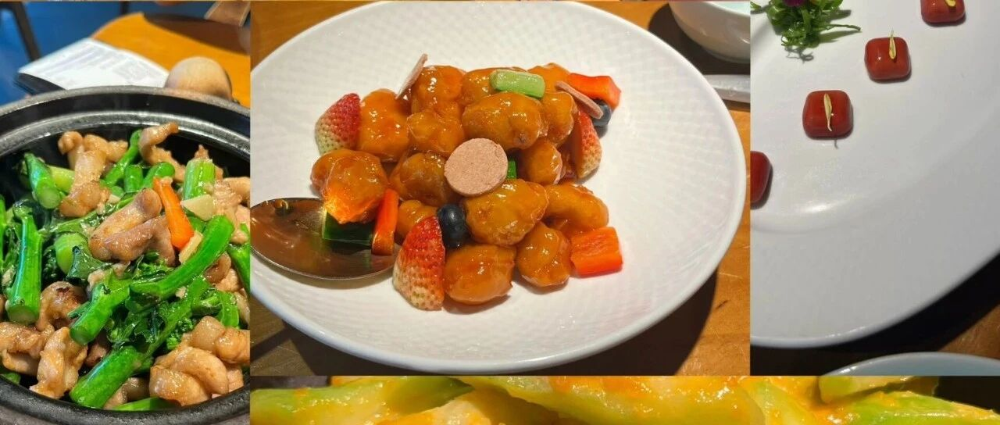

花了一晚上，整理了接下来的人生
点击关注 秋秋在分享
一起实现财务自由退休
大家好，我是秋秋～
最近在想一个特别实在的问题：人这一辈子到底怎么过，才算顺、才算值、才算不委屈自己？


最近都在广东玩，刚好有时间思考一下。
我本科学心理学，很多前辈都研究过这个问题。
比如埃里克森人生发展理论认为：
1. 0-6岁：建立安全感、学会独立探索
2. 6-12岁：勤奋努力
3. 12-18岁：找到我是谁
4. 18-25岁：建立亲密关系
5 25-65岁：创造、关怀、奉献
6.65岁+：不后悔、有尊严
每个阶段做到了，就顺了。
咱们中国人也有自己的人生阶段智慧：
• 三十而立、四十不惑
• 五十知天命：接纳自己，顺其自然
• 六十耳顺：不较真、心放宽
• 七十：从心所欲不逾矩
国家卫健委2026发布的人均预期寿命是79.25岁，实际上有质量的生命年龄更短，甚至不足70岁。
时间对每个人都公平。
在这个年龄内，我给自己捋出了一份超舒服的人生节奏。越看越觉得，这才是普通人最理想的活法。
0-15岁，对我来说是成长、探索、建立自信的阶段。
埃里克森说，这个年纪最重要的就是找到兴趣、养成勤奋感，别被压力压垮。
我的想法是在这个年龄多读点书，多去尝试，不用想着成功，能找到自己真正热爱的事情，比什么都重要。
15-25岁，是自我认同最关键的十年。
埃里克森认为，我们要搞懂“我是谁、我要做什么”。这十年，就认准热爱，深耕专业，把喜欢的事变成能吃饭的本事。
最好能实现经济独立，从迷茫到清晰，这一步走稳了，人生后面都会很顺。
25-35岁，真的是人生最黄金的时期。
这一阶段我们要完成独立稳定、创造价值。
我想在这个年纪，把热爱变成可持续的收入，睡后收入，然后大胆环游世界。
精力最好、压力最小、父母年轻孩子还小、底气最足，好好享受属于自己的自由。
35-45岁，埃里克森称之为“关怀与奉献期”。
人到中年，重心自然转向家庭或社会事业上。
对我来说，35岁开始正是孩子小学到高中的十多年，我会好好陪伴，这是一种价值实现。我也会努力构建自己的社会价值，比如秋秋这个IP 或者其他事业，成为一个品牌，也是人生一种圆满。
45-55岁，五十而知天命的阶段。
孩子已经独立，我会继续行万里路，心态应该会有所不同。
55-65岁，慢下来看风景。
会回到老家或者最喜欢的地方生活十年。孩子三十岁左右，也是需要支持的时，。必要时搭把手、指指路，下一代越来越好，也是属于我踏实的幸福。
65岁以后，就安心享受体面养老。
我可能会去医疗方便的大城市，健健康康、尽量有尊严地生活。吃得香、睡得好、心态稳，人生最后一段路，也要走得自在。
人的一生，真的不用赶。
前辈们研究回看一生，已经把最好的方式总结好了，该学习时不偷懒，该享受时不犹豫，该负责时不逃避，我们就已经做到满分。

年少有热爱，青年有方向，中年有自由，晚年有体面。
这，就是我想要的一生。
总结一下就是：
十五有志于学、三十而立、四十不惑，五十知天命…
希望我们都能财务自由、提前退休～